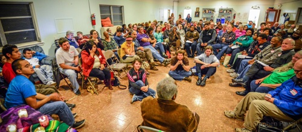

Dear Friends,
More than 70 years after sparking the Freedom Ride movement, the Fellowship of Reconciliation invites you to join us for along the route of a modern-day Freedom Ride in North Carolina and Tennessee next month. You will learn firsthand from civil rights veterans and strategize to build a movement to challenge the institutions of mass incarceration and immigrant deportation.
 In April 1947, the Congress of Racial Equality launched the first “Freedom Ride,” known as the Journey of Reconciliation. CORE was organized in 1942 by FOR members James Farmer, George Houser, Bernice Fisher, Homer Jack, James Robinson, and Joe Guinn. Bayard Rustin, who President Obama just posthumously awarded the Presidential Medal of Freedom, was FOR’s civil rights department director at the time, and with Farmer was one of two key CORE field organizers. In April 1947, the Congress of Racial Equality launched the first “Freedom Ride,” known as the Journey of Reconciliation. CORE was organized in 1942 by FOR members James Farmer, George Houser, Bernice Fisher, Homer Jack, James Robinson, and Joe Guinn. Bayard Rustin, who President Obama just posthumously awarded the Presidential Medal of Freedom, was FOR’s civil rights department director at the time, and with Farmer was one of two key CORE field organizers.
The Journey of Reconciliation represented FOR at its best. FOR leaders were unafraid to experiment with methods of nonviolent resistance to advance the struggle for equality. At a time when black soldiers returning from World War II faced the widespread denial of rights at home, and when outspoken conscientious objectors like Rustin were being released from prison, violence against black travelers was rampant.
The Journey’s goal was to challenge segregation in interstate travel by testing enforcement of the Supreme Court’s 1946 Irene Morgan v. Commonwealth of Virginia decision. The courageous, integrated group was harassed and arrested throughout its route, and upon imprisonment in North Carolina, Rustin and Igal Roodenko were forced to serve on a chain gang. The Journey paved the way for future nationwide campaigns against racial segregation, including the more famous 1961 Freedom Rides.
Meet the modern-day Freedom Riders!
This December, half a century later, I will join another diverse group of Americans by embarking on the 21st Century Freedom Ride. Led by the School for Conversion – an organization that “works for beloved communities that unlearn habits of social division by experimenting in a way of life with Jesus that makes surprising friendships possible” – we will "get on the bus" next month. We will travel through four Southern cities in North Carolina and Tennessee from December 14 to 18, and dream together about how to create the Beloved Community.

Although our group of travelers will not face the same dangers as the 1947 or 1961 Freedom Riders, the human rights issues we challenge today are as serious and pressing as those of the last century. Mentored by veterans of the Southern Freedom Struggle, we will address the racist structural violence now impacting our communities, especially mass incarceration and immigrant detention/deportation – what many call the New Jim Crow/Juan Crow system. It will be one more experiment in the effort for a more peaceful and just world.
We warmly invite you to join us in Durham NC, Greensboro NC, Knoxville TN, or Nashville TN for one of the planned events in the 21st Century Freedom Ride. If you can't attend but would like to support the Freedom Ride, the School for Conversion invites your contributions to help ensure its success.
 In the struggle, In the struggle,
Rev. Lucas Johnson
Southeast & Mid-Atlantic Regional Organizer
Fellowship of Reconciliation
|